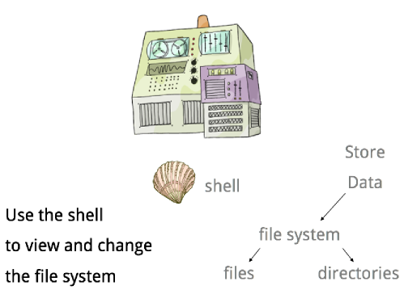
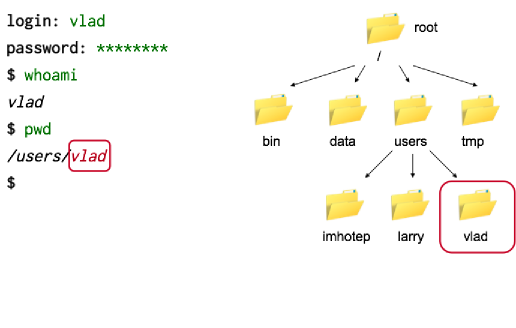
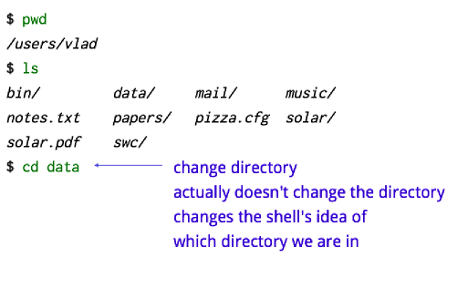

Frustration (continued)
It's been a frustrating couple of days. To recap, I want to convert our material from PowerPoint to HTML5 to make it easier for people to fork and merge, to make things easier to re-style, because it's an open format, and so on. David Seifried has welded an HTML5 audio player to Caleb Troughton's deck.js to create a display tool, which I'm very pleased with, but the content is killing me. Seriously. Here are three slides taken from our first episode on the Unix shell:
|  |
|  |
|  |
How can I translate those into HTML? The shell session transcripts are straightforward enough–a <pre> here, a <span> there–but what about the explanatory comment in blue in the third slide? Or the filesystem diagram in the second? Or the stuff (I can't think of a better term) in the first? As I see it, the options are:
- Give up and do simple bullet-point text with the occasional inset image file, as we did with Version 3. On the upside, it would be easy to write. On the downside, it's second-rate educationally. Good instructors don't cover blackboards with bullet points: they stir diagrams and text together, because that's what's most effective.
- Create one SVG (or HTML5 canvas element) per slide. The upside is free-form positioning; the downside is that both are painful to work with, which discourages creativity and collaboration.
What I mean by "painful to work with" is that a lot of careful manual editing would be needed to do things like add elements incrementally in sync with a transcript. The result would also be largely unintelligible to search engines, and good luck copying and pasting it.
Back to the drawing board…